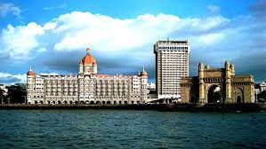
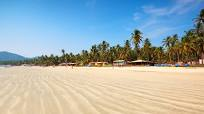
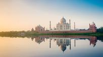
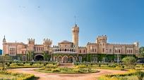
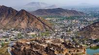
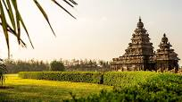
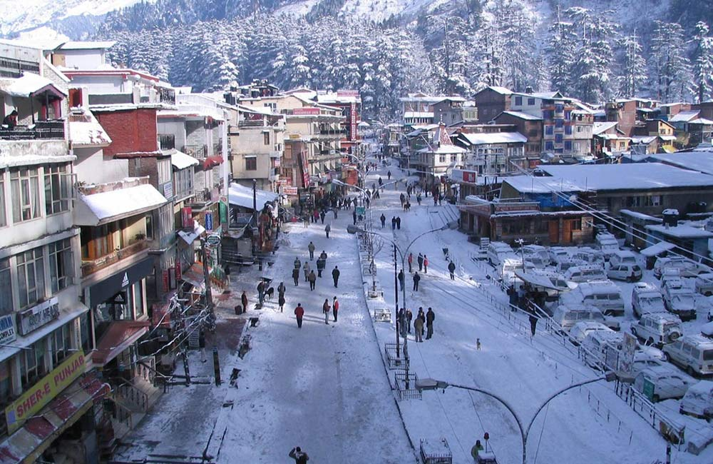
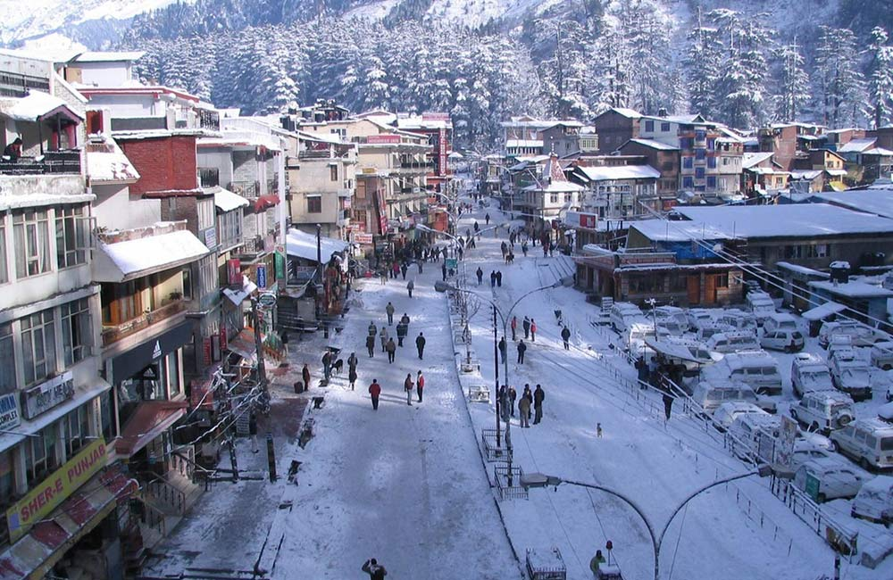

MUMBAI
Mumbai (formerly called Bombay) is a densely populated city on India’s west coast. A financial center, it's India's largest city. On the Mumbai Harbour waterfront stands the iconic Gateway of India stone arch, built by the British Raj in 1924. Offshore, nearby Elephanta Island holds ancient cave temples dedicated to the Hindu god Shiva. The city's also famous as the heart of the Bollywood film industry.

GOA
Goa is a state in western India with coastlines stretching along the Arabian Sea. Its long history as a Portuguese colony prior to 1961 is evident in its preserved 17th-century churches and the area’s tropical spice plantations. Goa is also known for its beaches, ranging from popular stretches at Baga and Palolem to those in laid-back fishing villages such as Agonda.

AGRA
Agra is a city on the banks of the Yamuna river in the Indian state of Uttar Pradesh, about 230 kilometres south-east of the national capital Delhi and 330 km west of the state capital Lucknow.Agra is best known for the Taj Mahal (17th century), designated a UNESCO World Heritage site in 1983. A complex mausoleum, the Taj Mahal is often considered to be the world's best example of Mughal architecture.

BENGALURU
Bengaluru (also called Bangalore) is the capital of India's southern Karnataka state. The center of India's high-tech industry, the city is also known for its parks and nightlife. By Cubbon Park, Vidhana Soudha is a Neo-Dravidian legislative building. Former royal residences include 19th-century Bangalore Palace, modeled after England’s Windsor Castle, and Tipu Sultan’s Summer Palace, an 18th-century teak structure.

JAIPUR
Jaipur is the capital of India’s Rajasthan state. It evokes the royal family that once ruled the region and that, in 1727, founded what is now called the Old City, or “Pink City” for its trademark building color. At the center of its stately street grid (notable in India) stands the opulent, colonnaded City Palace complex. With gardens, courtyards and museums, part of it is still a royal residence.

CHENNAI
Chennai, on the Bay of Bengal in eastern India, is the capital of the state of Tamil Nadu. The city is home to Fort St. George, built in 1644 and now a museum showcasing the city’s roots as a British military garrison and East India Company trading outpost, when it was called Madras. Religious sites include Kapaleeshwarar Temple, adorned with carved and painted gods, and St. Mary’s, a 17th-century Anglican church.

 
